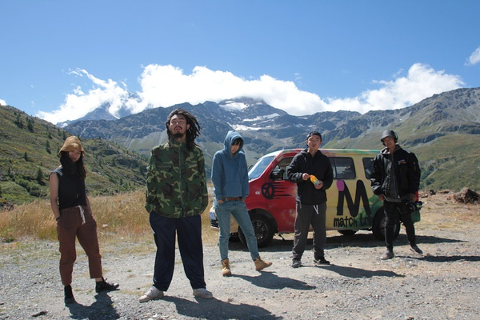

现在社会对旅行的过度强调有一种非常危险的导向，旅行好像已经跟健身一样，是绝对的政治正确。
很多人声称去某某地方旅行一次，就可以涤荡心灵、改变世界观之类的。
这种腔调带来很强的误导性，让人们不惜辞职旅行。
我的结论是，成长、改变可能会发生在旅途中，但并非旅行的应有之义，尤其不是现代蜻蜓点水的打卡游、跟团游可以产生的。
不过，之所以有这样误解，也不是没有根据，说起来可能跟人的基因有关的，从郑和到徐霞客，从麦哲伦到哥伦布，大批冒险家前仆后继，外面的世界很精彩啊~
《忧郁的热》带里提过，在原始部落，旅行好像有的跟人的成长有关。
在很多北美洲的部族里面，和青舂期必须通过的一些历练有关的情况，常常对个人的社会地位有决定性的影响。有些年轻人不带任何食物，自己乘着独木筏在水中漂流；有些人则自己一个人跑上山，去面对严寒、下雨和野兽。有时候他们一连好几天，好几个礼拜，甚至好几个月都没好好吃东西，或只吃粗糙的食物，或者长期禁食，甚至使用催吐剂使自己的身体情况变得更虚弱。一切事情都被用来做为与另外一个世界沟通的手段。他们沉浸在冰冷的水中很长一段时间；故意砍断几个手指关节；或者把削尖的木头插人他们的背肌下面，木头上绑上绳子，绳子的另一端绑着重物，然后拖着那重物走路，目的是为了把筋膜划破。他们即使不采取上述的极端手段，最少也会不断地做些毫无意义的工作，把自己弄得筋疲力尽，有时候是把身上的毛一根一根地拔掉，有时是把松树枝上的针叶一根根地拔掉，不然就是在一块大石头上面打洞。 进行这些历练，会使他们进入一种精神恍惚、身体虚弱、神经不稳的状态，他们希望藉此可以和超自然世界沟通。具体来说，就是他们相信一种神奇的动物，被他们所受的强烈痛苦感动，出现在他们眼前。他们可以依照该保护神的名字取名，因此得到特殊的能力（权力），这些权力也决定了他们在自己社群中的地位。 就这些土著看来，社会不能提供给他们任何东西，他们觉得改变命运的唯一手段是冒险直接进入有秩序的生活的边缘，接受身体与精神折磨的最大极限，冒着永远回不来危险，一切都豁出去的人有可能因此取得力量。
现代社会后，人们已经有了更多方法来获得权力和地位，不一定通过自残。但是受荷尔蒙和人类原始本能刺激，我们的青春期男女，从孩提时代起，就用各种不同的方式来逃避当代文明加在他们身上的种种规范，反而社会越平和、安逸，这种逃避越强烈。逃避的方法就是走出去，走到最远的地方，所以文青们喜欢的民谣里最多的都是远方、流浪这种字眼。
旅行者老是觉得，只要走出去就会与众不同，这些冰冷的山峰、深陷的洞穴或难以进人的森林，都是可以得到髙贵的启示的地点。我们总是赋予远方以高贵性，却对日常生活无比厌倦。
背包客最早就是从战后垮掉的一带开始的（未考据），那时候很多嬉皮士到处游荡，尼泊尔那个时候是很多嬉皮士聚集地。在村上春树《远方的鼓声》里提到过这些人，《在路上》这本书里描述的就是这种嬉皮士文化。
（摄于尼泊尔博卡拉）
这种文化和生活方式自然是美好的，可跟成长无关。
在中国当下社会，焦灼的功利主义遭遇蠢蠢欲动的嬉皮欲望就产生了奇特的，又想旅行，又想获得成长的“想得美”心理。
事实上，除非带着目的的游学、投资（《忧郁的热带》、《玩赚地球》），否则，大多数旅行给人带来的成长远不如读书学习快，反而容易让人喜欢上旅行这种强烈感官刺激，半衰期短的获得见识和快乐的方式。
德波顿在《旅行的艺术》中提到：
刚进入一个新的地方的时候，我们的敏感性会引领我们注意很多东西，等到确认这个地方对我们而言有何功能之后，我们注意的东西就会越来越少。
这是旅行的好处。也是其毒性所在。
然而，依靠旅行寻找新鲜感和逃避现有生活是一种饮鸩止渴。如果没有足够的知识储备、阅历和经历，你并不能从眼前的景象中获得太多。
有些人知道如何利用他们的日常生活中平淡无奇的经验，使自己成为沃土，在这片沃土上每年能结出三次果实，而其他一些人则只会逐命运之流，逐时代和国家变幻之流，就像一个软木塞一样在上面漂来漂去。当我们观察到这一切后，我们会把人分类两类：一种人可以化腐朽为神奇，另一种人则是化神奇为腐朽，绝大部分人是后者，前者则为数寥寥。
而且旅行越来越多跟炫耀、经济水平相连，早就丧失了徐霞客时期的意味。
有人说旅行可以开阔眼界，事实上，通过出去旅行一次获得的“眼界”，也未免太浅薄，去意大利一趟获得的眼界，哪里比得上在家读一遍《罗马人的故事》，当然读完再去会事半功倍。
何况，旅行开阔的“眼界”，非常容易带来偏见。相对于阅读带来的缓慢理性的意识构建，感官刺激带来的意识建构更加强烈。大抵是因为缺乏了解，所以以偏概全。
而且旅行大多时候，没有想象中那么美好，正如村上春树在他的游记里所说，不同城市之间的区别在于，在这里你需要解决这样的烦心事，在那里你需要解决那样的烦心事，都是在解决各种烦心事而已。如果你还觉得旅行美好，那多半因为你的旅行还不够久，不够local。
所以成长没有那么简单，跟旅行不旅行无关，跟你有没有坚持学习、思考有关。不是买张机票就能一下子洞穿人生大道理，瞬间变得深刻、聪明、自信、坚强。
如同神话中的印第安人那样，他们走到地球允许他们走的最远处，看见那里的动物，询问那里的人，所得到的却是同样的失望：他笔直地站立着，痛苦地哭泣、祈祷、嚎叫。但是还是听不到什么神秘的声音。他已完全明白，的确没对任何人会赋予他任何力量、权利。
最近界面报道了几个开面包车去罗马的年轻人，主人公在被记者问到这次旅途对你来说有什么改变时，
这样回答：
这次旅途对我来说击碎了我之前对美好世界的幻想，出发之前我觉得一切事情都是美好的，但是当真正遇到警察的坑蒙拐骗之后，我开始明白了童话里都是骗人的。哈哈哈哈哈！
如果你想知道会不会成长，这就是答案。
（网图侵删）